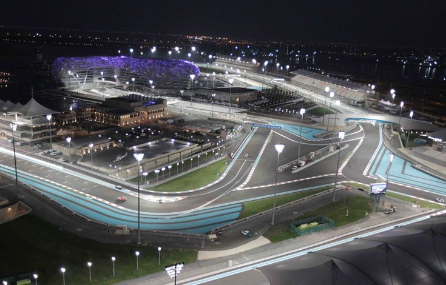

Abu Dhabi Circuit

Technical Details
Location: Abu Dhabi, UAE
Length: 5.281 km
Laps: 58
First GP: 2009
Curiosities
The Yas Marina Circuit hosts the Abu Dhabi Grand Prix and is one of the most technologically advanced venues in Formula 1. It is famous for its twilight-to-night race transition and modern architectural design. The circuit has often been the season finale, hosting many championship-deciding moments. Over the years, it has undergone modifications to improve racing and overtaking opportunities.